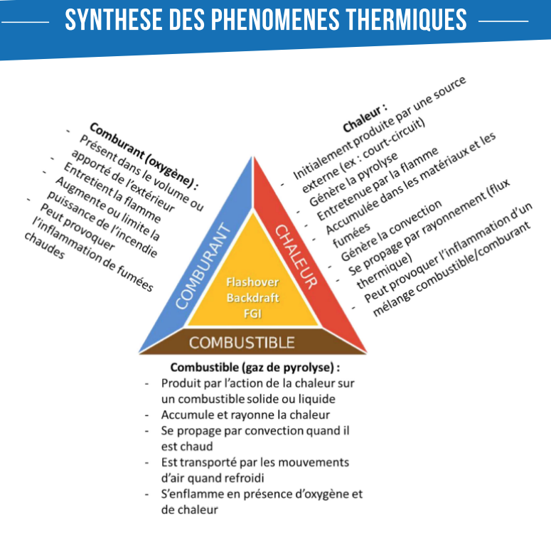
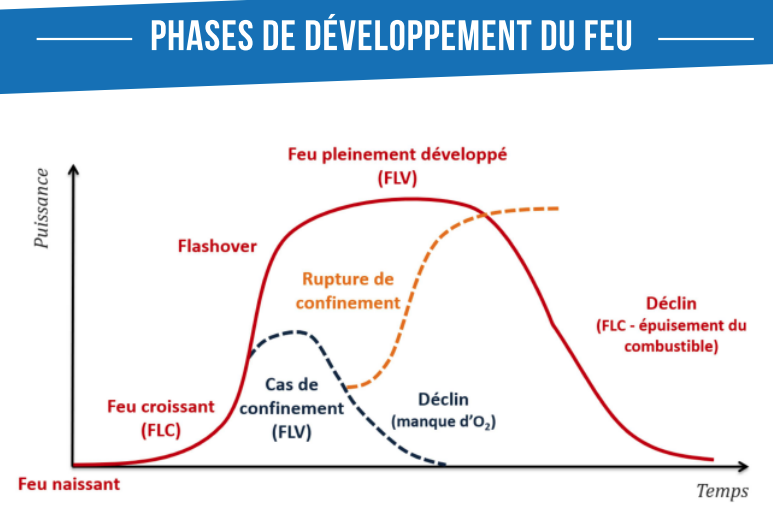
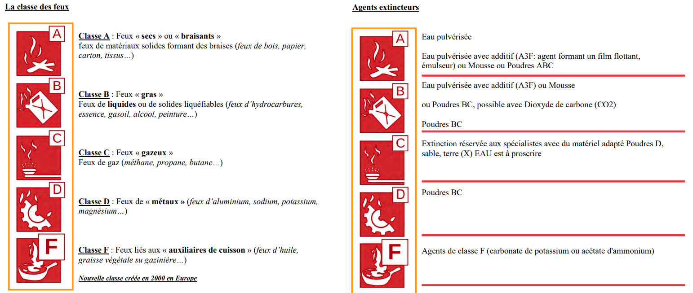
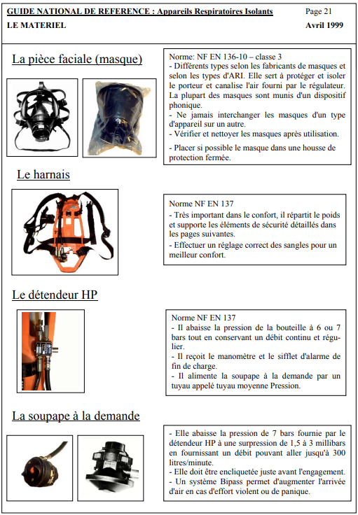
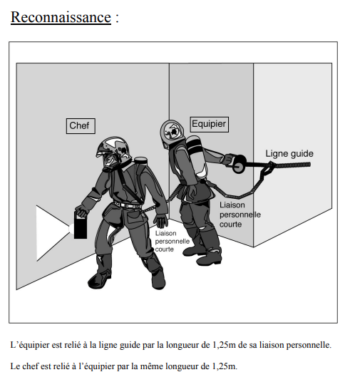
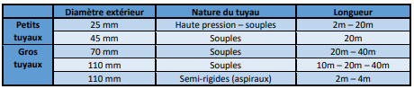
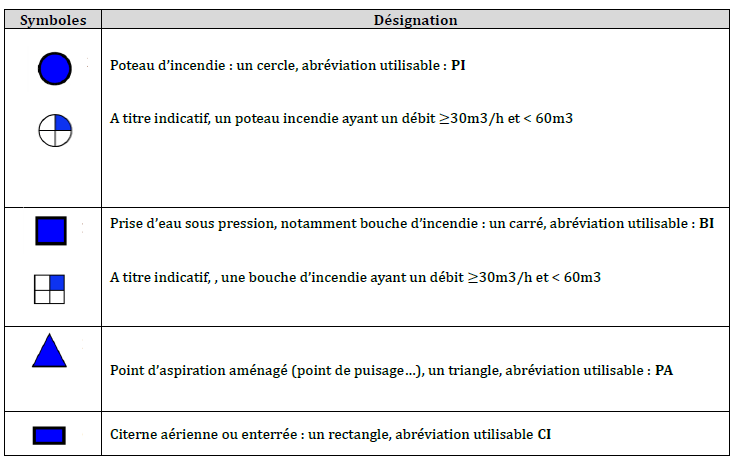

Outils - technique
Manoeuvres
MSP
Théorie appliquée à la pratique
| Triangle du feu et phénomènes/accidents thermiques

|
|
| Phases du feu  | |
Modes propagation du feu
|
|
Classes feu & Extincteurs

|
Technique
Action à la lance : 5D
|
|
Types de jets
|
|
Procédés d’extinction
|
|
Les techniques d’extinction
Technique :impulsion (100-250lmin) courte (1/2s) pour les petits locaux ou longue (2-5secondes) pour les grandes structures puis refermer la porte. Sauf quand plafond bas fumé, interface air fumé turbulent → jet droit sweep plafond 300L/min. en situation pré-flashover interface fummée instable : jet droit, 250Lmin appliquer sur plafond et parois en sweep en situation pré-flashover de roll-over : inutile, se replier! |
Matériel
ARI
 |
|
Ligne de vie
 |
|
Les tuyaux

|
|
Les hydrants
Pour ouvrir complétement un poteau incendie : 13 tours pour les PI80-PI100 et 17 tours pour les PI150 (marque jaune sur le poteau).
Poteau surpressé : jaune. Poteau aspiration : bleu. Aspiration : 8m de tuyau max, 6 metres de denivelé négatif max.  |
Manoeuvres BAT
Etablissement d'une LDT
| Equipier | CE |
|---|---|
| Aide déroulement du dévidoir jusqu'au 1er raccord - suit ce jusqu'au point d'attaque |
Récupère lance du conducteur - fait sa réserve (2,3 tours tuyau sur l'épaule) - va au point d'attaque |
Etablissement d'une LDV
| Equipier | CE |
|---|---|
| récupère 2 tuyaux (45) ou 1 (70) du conducteur | récupère 1 tuyaux (45) et une LDV du conducteur |
| Vont au point d'attaque et déroule un minimum de tuyau | |
| prépare le branchement et apporte le raccord au conducteur, rapporte le tuyau de réserve au point d'alimentation rejoint le CE en vérifiant l'établissement |
prépare sa lance et attend dos au feu avant mise en eau - ordre "prêt" |
| Différents établissements :
sur l’engin sur une division d’alimentation sur une colonne sèche ou humide sur une division d'attaque Vertical par l’exterieur : tuyaux isses a l’aide de la commande ou tires derriere le chef BAT si echelle ; solidarise par des sangles ou crochets d’echelle. |
|
Etablissement particulier : lance à mousse / queue de paon / lance canon
| Equipier | CE |
|---|---|
| E-BAL : récupère émulseur effectue raccordement tuyau et injecteur côté alimentation donne au conducteur |
CE-BAL : récupère proportionner plonge injecteur dans l'émulseur |
| E-BAT : récupère 2 tuyaux effectue raccordement tuyau et injecteur côté lance |
CE-BAT : récupère une lance à mousse et 1 tuyau prépare sa lance (500L minute - jet droit) |
Remplacement tuyau
| Equipier | CE |
|---|---|
| Récupère tuyau - établi parallèlement au tuyau a remplacer ferme sur ordre CE - remplace tuyau côté alimentation |
"fermer" - remplace tuyau côté lance - "ouvrer" |
Prolongation tuyau
| Equipier | CE |
|---|---|
| Récupère tuyau - établi parallèlement 2 demi-raccord point d'attaque se rend a l'alimentation et ferme puis ouvre sur ordre |
"Fermer" - Remplace tuyau - "ouvrer" |
Manoeuvres BAL
Alimentation d'une prise d'eau
| Equipier | CE |
|---|---|
| Cas devidoir : Récupèrent le dévidoir et se rende au d'emplacement de la division mixte. Cas tuyau et division : sens d'établissement au plus simple (de l'engin à la division générallement) |
|
| Repart à l'alimentation avec le dévidoir | Dépose la division - ferme tous les robinets sauf un - rejoint équipier - dépose 1/2 raccord - remet au conducteur vérifie établissement et ferme le robinet |
Types : Division d'attaque division d'allimentation d'une colonne seche |
Alimentation de l'engin avec dévidoir
| Equipier | CE |
|---|---|
| Récupère une clé de poteau !
Cas tuyaux 70 : équipier 2 tuyaux, CE 1 tuyau. Cas dévidoir : récupèrent le dévidoir - détache division et donne demi-raccord au conducteur - part avec dévidoir jusqu'à l'alimentation |
|
| Détache demi-raccord et donne au CE Prépare un second tuyau pour alimentation en bretelle |
Prépare (purge) le poteau et raccorde le (les en cas de bretelle) demi-raccord mets en eau quand le dispositif est prêt |
MSP
Généralités | |
Avant et pendant l'engagement :lecture du feu & contexte -->VBEFFCOS | |
|
Concernant les fumées et leurs risques --> COMIX |
Avant engagement sous-ARI | |
|
Check croisé sécurité binome (important CE)--> RAPACE
|
Engagement dans un local | |
|
TOOTEM |
Recherche et sauvetage | |
|
AIDES : Technique de recherche et de sauvetage (réserver a des pièces avec 1 porte) |
Feu de VL GAZ - Electrique | |
|
Technique : refroidir reservoir d'E. Sauf embrasement batterie, dans ce cas protection de l'environnement. Si feu naissant : ok 1 LDV Si vehicule complétement en feu : 2 LDV 250Lmin minimum, dont 1 qui s'occupe du réservoir pendant que l'autre procéde à l'extinction de la partie arrière à la partie avant. Jet plein à 50m, JDA à partir de 10m |